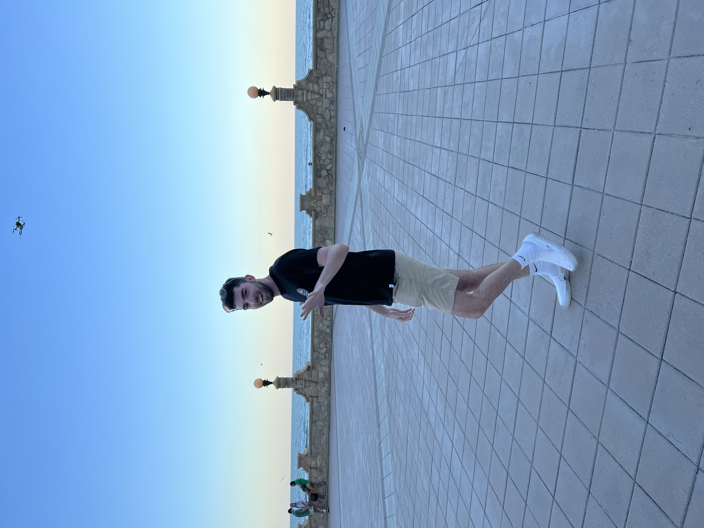

GRANT OSBORNE
20 Garrison Lane | Ballston Lake, NY 12019 | (518) 545-9927 | osborngk@dukes.jmu.edu

EDUCATION
James Madison University – Harrisonburg, VA, May 2023
Bachelor of Science in Sports & Recreation Management; Minor: General Business
Bachelor of Arts in Media Arts and Design
GPA: 3.7/4.0; School of Business Academic Excellence Scholarship, Dollars for Scholars Award
RELATED COURSEWORK
Introduction to Sports Media, Management in Sports and Recreation, Sociology and Psychology in Sports, Audio/Video Storytelling, User Experience Design, Introduction to Advertising and New Media, Copywriting for Advertising, Sports Marketing and Sales, Program and Assessment in Sports and Recreation, Ethical & Legal Issues in Sports and Recreation, Media Art: Culture by Designs, Elements Creative Advertising
CAREER RELATED EXPERIENCE
Capital District YMCA, Albany, NY
Marketing Intern, June 2022-present
- Created print media such as flyers and brochures, social media posts, and other CDYMCA collateral
- Consulted with Branch Executive Directors and discussed their marketing needs
- Ran the Schenectady YMCA Facebook by taking photos, videos, and created content
2aDays (Review Site), New York, NY
Intern, January 2022-April 2022
- Conducted outreach and interviews to develop and write blog articles
- Created digital media campaigns including YouTube videos, Tik Toks, and memes
- Completed market and demographic research to develop a marketing plan
James Madison University Recreation Center, Harrisonburg, VA
Marketing Assistant, August 2020-October 2021
- Promoted information regarding University Recreation programs, facilities, and services
- Designed flyers, signage, and displays for intramural sports and adventure activities
- Marketed sport and recreation events on social media platforms, including Instagram and Twitter
- Photographed and livestreamed University Recreation events
Southern Saratoga YMCA, Clifton Park, NY
Camp Counselor, Summer 2021-2022
- Directed engaging recreational activities amongst large groups of kids
- Supervised camp activities including arts and crafts, sports, and building projects
James Madison University Recreation Center, Harrisonburg, VA
Intramural Official, August 2019-March 2020
- Enforced rules of play for flag football and dodgeball leagues
- Provided supervision for safety, fair play, and sportsmanship for intramural sports activities
COMPUTER SKILLS
Photoshop, Illustrator, InDesign, WordPress, Google Drive, Trello, Sublime, Axure RP, GarageBand, MailChimp, Microsoft Office (Word, Excel, PowerPoint, Outlook), Google Analytics, Canva, Agorapulse